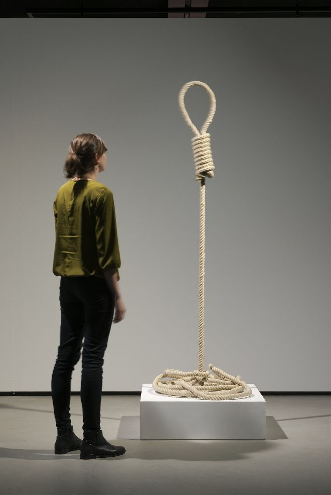
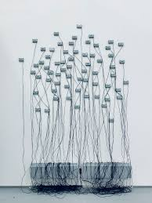

Arte interactivo y participación
Rafael Lozano-Hemmer es un artista contemporáneo reconocido por sus instalaciones interactivas que combinan tecnología, arquitectura y participación del público. Su trabajo se centra en la creación de obras que requieren la presencia activa de las personas para completarse, transformando al espectador en protagonista. Sus proyectos utilizan sensores, proyecciones, luces y sistemas digitales para responder en tiempo real a estímulos como el movimiento, la voz o los datos biométricos. Este enfoque genera experiencias dinámicas donde cada interacción produce un resultado único e irrepetible. A través de estas obras, explora temas como la vigilancia, la identidad, la memoria y la relación entre lo individual y lo colectivo. Su práctica se sitúa en el cruce entre arte, ciencia y tecnología, con un fuerte énfasis en lo experiencial.
Trayectoria y proyección internacional
Nacido en México y con formación en química física, Lozano-Hemmer desarrolló una carrera artística orientada al uso crítico de la tecnología. Su enfoque interdisciplinario le permitió integrar conocimientos científicos en la creación de obras complejas y conceptuales. A lo largo de su trayectoria, ha presentado instalaciones en espacios públicos, museos y bienales internacionales. Sus proyectos a gran escala han intervenido edificios, plazas y paisajes urbanos, convirtiendo el espacio público en un escenario de interacción colectiva. Su trabajo ha sido ampliamente reconocido por su capacidad para involucrar al público y generar experiencias participativas. Se ha consolidado como una figura clave en el arte contemporáneo vinculado a la tecnología y la interactividad.
Sistemas interactivos y tecnología en tiempo real
El trabajo de Rafael Lozano-Hemmer se basa en el desarrollo de sistemas tecnológicos que reaccionan a la presencia humana. Utiliza dispositivos como cámaras, micrófonos y sensores biométricos para captar información del entorno y transformarla en respuestas visuales o sonoras. Estas obras funcionan en tiempo real, generando una relación directa entre acción y resultado. El público no solo observa, sino que influye activamente en el comportamiento de la obra, creando experiencias personalizadas y colectivas al mismo tiempo.



